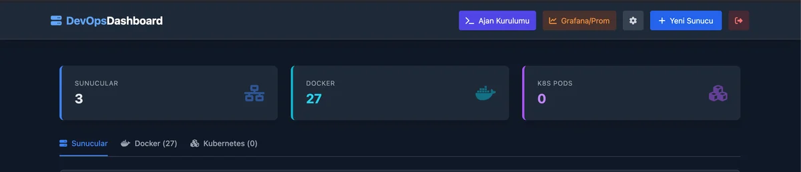
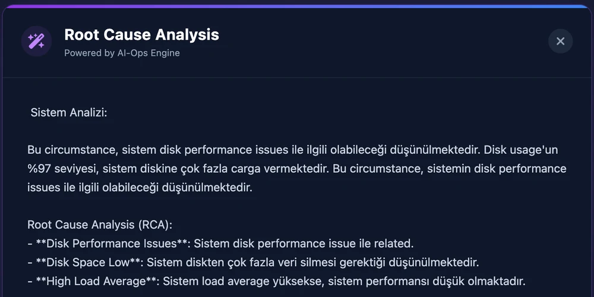

Hi, I’m Berk
IT Infrastructure & Linux Systems
I’m a final-year Computer Engineering student at Akdeniz University. I set up Linux servers, self-host services with Docker, and experiment with infrastructure monitoring in my home lab.
CV
Selected work
AI-Ops Dashboard
Solo project · Run in my home lab
I built this dashboard to see metrics and logs in one place when a service slows down. It brings together data from Linux hosts and Docker containers and supports local inference to help investigate possible causes.
- mTLS for agent authentication and RSA signatures for command integrity
- Prometheus metrics, Grafana dashboards, and live container logs
- Local model via LM Studio, with LangGraph routing for diagnostics

How the system works
- Linux agent A Bash/Python agent collects host and container telemetry.
- Metrics and logs Spring Boot exposes metrics to Prometheus. Grafana charts them and the Angular dashboard displays live logs.
- Local diagnostics The dashboard passes relevant telemetry to a local model and displays possible causes.
Example diagnostic output
This prototype screenshot shows a reported disk usage of 97%. The model flags disk space as a possible factor, giving the operator a starting point for investigation.


Linux home lab
I ran self-hosted services locally with CasaOS and Docker. I also set up a small Kubernetes environment with K3s to experiment with running containers in a cluster.
View K3s lab manifests ↗Metric TSP algorithms
I compared greedy and Christofides-based approaches to the metric traveling salesperson problem in Python and visualized the results.
View GitHub repository ↗Profile & skills

Berk Kocabörek
Akdeniz University
BSc in Computer Engineering · Final year
2023–2027 (expected) · Antalya, Türkiye
English · Professional working proficiency (YÖKDİL 92.5)
Open to Erasmus+ traineeship opportunities.
Available for junior roles from fall 2027.
- Systems & cloud
- Linux / RHEL 9 · Docker · CasaOS · K3s / Kubernetes
- Networking & security
- TCP/IP · VLAN · DNS · TLS · Cisco Networking Academy
- Cloud & deployment
- AWS · Cloudflare · Nginx · GitHub Actions
- Automation & observability
- Bash · Python · Prometheus · Grafana